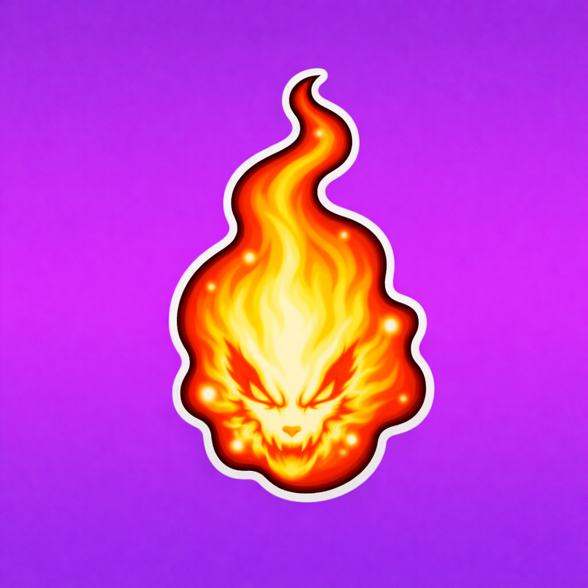

🦊 EVIL FOX SPIRIT'S CHAKRA FRAGMENT
EPIC
Obtained From
• Kid Noruto
Used For
Upgrade
Evil Fox Spirit's Chakra Fragment is used at the Blacksmith to upgrade:
- Noruto Kid Outfit

• Kid Noruto
Evil Fox Spirit's Chakra Fragment is used at the Blacksmith to upgrade: